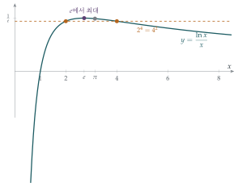

STEP II 2013, 문제 1
계속 읽기 전에 문제를 먼저 읽어 보자. 문제는 STEP Support Programme의 문제 데이터베이스에 있다: step.maths.org/questions/13-s2-q1
도입
\(\pi^e\)와 \(e^\pi\) 중 어느 쪽이 더 클까? 계산기는 1초 만에 알려 준다: \(e^\pi \approx 23.14\)이고 \(\pi^e \approx 22.46\)이다. 그러나 계산기는 그렇다는 사실만 알려 줄 뿐 왜 그런지는 알려 주지 않으며, 비슷한 질문 무한히 많은 것을 한꺼번에 해결하는 데에도 도움이 되지 않는다. \(3^\pi\)는 \(\pi^3\)보다 클까? 당연한 \(n = m\) 말고도 \(n^m = m^n\)을 만족하는 자연수가 있을까?
이 모든 질문은 결국 하나의 곡선 \(y = \ln x\)와 그것을 가로지르는 직선들에 관한 것이다. 이 문제는 그래프를 신중하게 사용하면 대수적으로는 가망 없어 보이는 비교를 해결할 수 있다는 것, 그리고 수 \(e\)가 자연스러운 경계점으로 등장한다는 것을 보여 준다.
시작하기 전에
로그(logarithm)를 취하면 \(a^b = b^a\)는 \(b\ln a = a\ln b\)와 같다. 이 식을 변형하여 \(a\)는 한쪽에만, \(b\)는 다른 쪽에만 나타나게 하라.
\(b\ln a = a\ln b\)는 다음과 같다. \[\frac{\ln a}{a} = \frac{\ln b}{b}.\] 따라서 \(a^b\)와 \(b^a\)의 비교는 모두 하나의 함수 \(h(x) = \frac{\ln x}{x}\)의 \(a\)와 \(b\)에서의 값을 비교하는 것이다. 또 \(\frac{\ln a}{a}\)는 원점과 곡선 \(y = \ln x\) 위의 점 \((a, \ln a)\)를 잇는 직선의 기울기(gradient)이다. 이 문제가 직선에 관한 것인 이유가 바로 이것이다.
차근차근 풀기
단계 1 원점을 지나는 접선
\(y = mx\)가 \(x = x_0\)에서 \(y = \ln x\)에 접한다면, 어떤 두 등식이 성립해야 하는가?
직선과 곡선이 만나야 하므로 \(mx_0 = \ln x_0\)이고, 기울기가 같아야 하므로 \(m = 1/x_0\)이다. 둘째 식을 첫째 식에 대입하면 \(1 = \ln x_0\)이므로 \(x_0 = e\)이고 \(m = 1/e\)이다. 원점에서 그은 접선(tangent)은 점 \((e, 1)\)에서 곡선에 접한다.
반대로 \(y = mx\)가 \(x = a\)와 \(x = b\)에서 곡선과 만나면 \(\ln a = ma\)이고 \(\ln b = mb\)이므로 \(\frac{\ln a}{a} = m = \frac{\ln b}{b}\)이다. 이로부터 \(b\ln a = a\ln b\)를 얻고, 따라서 \(a^b = b^a\)이다.■
그래프에 대하여: 원점을 지나면서 접선보다 약간 덜 가파른 직선은 접점의 양쪽에서 한 번씩, 모두 두 번 곡선과 만나므로 \(a < e < b\)이다. 기울기가 \(1/e\)보다 큰 직선은 곡선과 전혀 만나지 않는데, \(\ln x\)가 위로 볼록(concave)하여 접선 \(y = x/e\)보다 완전히 아래에 있기 때문이다.
단계 2 원점 위쪽에서 \(y\)축과 만나는 직선
이제 직선은 \(c > 0\)인 \(y = mx + c\)이다. \(\frac{\ln p}{p}\)와 \(\frac{\ln q}{q}\)를 \(m\)과 \(c\)로 나타내면 무엇인가?
\(\ln p = mp + c\)와 \(\ln q = mq + c\)로부터 \[\frac{\ln p}{p} = m + \frac{c}{p}, \qquad \frac{\ln q}{q} = m + \frac{c}{q}.\] \(c > 0\)이고 \(p < q\)이므로 \(\frac{c}{p} > \frac{c}{q}\)이고, 따라서 \(\frac{\ln p}{p} > \frac{\ln q}{q}\)이다. 양변에 \(pq > 0\)을 곱하면 \(q\ln p > p\ln q\)이므로 \(p^q > q^p\)이다.■
기하학적으로 보면: 두 점을 지나는 직선이 원점 위쪽에서 \(y\)축과 만날 때, 원점에서 바라보면 점 \((p, \ln p)\)가 \((q, \ln q)\)보다 더 가파른 각도에 보인다.
단계 3 \(e\) 오른쪽의 현
\(e \leq p < q\)일 때 \((p, \ln p)\)에서 \((q, \ln q)\)까지의 현(chord)은 \(p\)에서의 곡선의 기울기보다 작은 기울기를 가진다. 왜 그런가? 그리고 그 때문에 왜 현의 \(y\)절편(intercept)이 양수가 되는가?
\(\ln x\)는 위로 볼록하므로 그 기울기 \(1/x\)는 감소하고, 따라서 \(p\)에서 \(q\)까지의 현은 \(p\)에서의 접선보다 덜 가파르다. 즉 현의 기울기 \(s\)는 \(s < \frac1p\)를 만족한다. 현의 \(y\)절편은 \[c = \ln p - sp > \ln p - \frac{1}{p} \cdot p = \ln p - 1 \geq 0\] 이다. 여기서 \(p \geq e\)를 이용하였다. 따라서 현은 원점 위쪽에서 \(y\)축과 만난다.■
이 결과와 2단계를 이용하여 \(\pi^e\)와 \(e^\pi\) 중 어느 쪽이 더 큰지 판단하라.
\(p = e\), \(q = \pi\)로 두자. 두 점 사이의 현은 절편이 양수이므로, 2단계에 의해 \(p^q > q^p\)이다. 즉 \[e^\pi > \pi^e.\]
단계 4 접선과 평행한 현
이제 \(p\)에서 \(q\)까지의 현의 기울기가 접선 \(y = \frac{x}{e}\)의 기울기와 같은 정확히 \(\frac1e\)라고 하자.
이 현은 \((e, 1)\)에서의 접선과 평행하다. \(\ln x\)는 위로 볼록하므로 곡선은 그 접선 아래에 있다. 현은 원점 위쪽에서 \(y\)축과 만나는가, 아니면 아래쪽에서 만나는가?
현은 어떤 \(c\)에 대하여 직선 \(y = \frac{x}{e} + c\)이다. 현의 양 끝점은 곡선 위에 있는데, 곡선은 접선 \(y = \frac{x}{e}\) 위에 있거나 그보다 아래에 있으며, \(x = e\)에서만 접선과 닿는다. 양 끝점이 모두 \(x = e\)에 있을 수는 없으므로 적어도 하나는 접선보다 엄밀히 아래에 있고, 따라서 평행한 현 전체가 접선 아래에 있다: \(c < 0\). 이제 \(c < 0\)으로 2단계를 반복하면 부등식의 방향이 바뀌어 \(\frac{\ln p}{p} < \frac{\ln q}{q}\)가 되고, 따라서 \(q^p > p^q\)이다.■
돌아보기
하나의 함수로 환원하기. \(a^b\)와 \(b^a\)의 비교는 \(h(a)\)와 \(h(b)\)의 비교가 되었다. 여기서 \(h(x) = \frac{\ln x}{x}\)이다.
근거가 있는 그래프. “그래프를 이용하여”라는 각 요구는 정확한 사실로 뒷받침되었다: \(\ln\)의 볼록성(현은 곡선 아래, 접선은 곡선 위)과 절편의 부호이다.
\(e\)의 특별한 역할. 원점에서 그은 접선은 \(x = e\)에서 접하며, 이 점이 이 모든 비교의 경계점이다.
숨은 수학
이 문제의 모든 내용은 \(h(x) = \frac{\ln x}{x}\)의 그래프(그림 3.5.1)에서 볼 수 있다. 그 도함수(derivative)는 \(h'(x) = \frac{1 - \ln x}{x^2}\)이므로, \(h\)는 \((0, e)\)에서 증가하고 \(x = e\)에서 최댓값 \(\frac1e\)에 도달한 뒤 \(0\)을 향해 감소한다. \(0\)과 \(\frac1e\) 사이의 높이 \(m\)에 그은 수평선은 그래프와 두 번, 즉 \(h(a) = h(b)\)인 두 점 \(a < e < b\)에서 만나는데, 이것이 바로 \(a^b = b^a\)이다. \(e\)의 오른쪽에서 \(h\)는 감소하므로 \(e \leq p < q\)이면 \(h(p) > h(q)\), 즉 \(p^q > q^p\)이다. 특히 \(e^\pi > \pi^e\)이고, 더 일반적으로 모든 \(x \neq e\)에 대하여 \(e^x > x^e\)이다. 이 게임에서 \(e\)를 이기는 수는 없다.

\(x^y = y^x\)의 모든 해
\(x^y = y^x\)를 만족하는 서로 다른 양의 실수 쌍은 무엇일까? 깔끔한 요령으로 그것을 모두 찾을 수 있다. \(t > 1\)로 \(y = tx\)라 두면, \(x^{tx} = (tx)^x\)로부터 \(x^t = tx\)를 얻으므로 \(x^{t-1} = t\)이고 \[x = t^{1/(t-1)}, \qquad y = t^{t/(t-1)}.\] \(t = 1 + \frac1n\)으로 쓰면 \(x = \left(1 + \frac1n\right)^n\)과 \(y = \left(1 + \frac1n\right)^{n+1}\)을 얻는다. \(n = 1\)이면 \((2, 4)\)이고, \(n = 2\)이면 \(\left(\frac94, \frac{27}{8}\right)\)인데, 실제로 \(\left(\frac94\right)^{27/8} = \left(\frac{27}{8}\right)^{9/4}\)이다. \(n \to \infty\)일 때 둘 다 두 갈래가 만나는 점인 \(e\)로 수렴한다. 이 문제는 1728년 다니엘 베르누이(Daniel Bernoulli)와 크리스티안 골드바흐(Christian Goldbach)가 주고받은 편지에서 논의되었고, 나중에 오일러(Euler)도 다루었다.
가장 경제적인 밑
함수 \(x^{1/x} = e^{h(x)}\) 역시 \(x = e\)에서 최대가 된다. 이 사실은 흥미로운 질문 하나에 답해 준다: 기수법의 “비용”을 밑과 필요한 자릿수의 곱으로 정하면, 가장 경제적인 밑은 \(e\)이고, 자연수 중에서는 \(3\)이다(근소한 차이로 \(2\)를 앞선다). 1958년 소련의 세툰(Setun) 같은 몇몇 실험적인 컴퓨터는 \(3\)진법을 사용했다.
사고 기술
두 양이 얽혀 있는 부등식이나 등식은 하나의 함수를 두 점에서 계산한 값에 관한 명제가 되는 경우가 많다.
그 함수를 얻고 나면, 그 그래프(어디서 증가하고, 감소하고, 최대가 되는지)가 모든 질문에 한꺼번에 답해 준다. 여기서는 \(a^b\) 대 \(b^a\)가 \(h(a)\) 대 \(h(b)\)가 되었다.
더 도전하기
자연수. STEP I 1988, 문제 1를 풀어 보라.
더 많은 비교. STEP II 2025, 문제 3 (OCR에서 내려받는 2025년 시험지 묶음, zip 파일)를 풀어 보라. 이 절의 그래프를 이용하여 \(a^b\)와 \(b^a\) 사이의 비교를 더 해결하는 문제로, 그중 하나에서는 \(e\)에 대한 수치적 한계가 결정적인 역할을 한다.
한 줄 증명. \(x \neq 0\)일 때 성립하는 \(e^x > 1 + x\)에 \(x = \frac{\pi}{e} - 1\)을 대입하여 \(e^\pi > \pi^e\)를 직접 증명하라.
더 읽을거리
Eli Maor, e: The Story of a Number (Princeton University Press). 방정식 \(x^y = y^x\)를 포함하여 \(e\)의 역사를 다룬다.
Paul Nahin, An Imaginary Tale (Princeton University Press). \(\sqrt{-1}\)에 관한 내용만 있는 것이 아니다. 바로 이런 종류의 흥미로운 계산으로 가득하다.
Michael Spivak, Calculus (Cambridge University Press). 11장에서는 도함수를 이용하여 그래프의 모양을 이해하는 방법을 완전히 엄밀하게 다룬다.